nmf_sparse_experiment2
zihao12
2020-03-06
Last updated: 2020-03-06
Checks: 7 0
Knit directory: ebpmf_demo/
This reproducible R Markdown analysis was created with workflowr (version 1.6.0). The Checks tab describes the reproducibility checks that were applied when the results were created. The Past versions tab lists the development history.
Great! Since the R Markdown file has been committed to the Git repository, you know the exact version of the code that produced these results.
Great job! The global environment was empty. Objects defined in the global environment can affect the analysis in your R Markdown file in unknown ways. For reproduciblity it’s best to always run the code in an empty environment.
The command set.seed(20190923) was run prior to running the code in the R Markdown file. Setting a seed ensures that any results that rely on randomness, e.g. subsampling or permutations, are reproducible.
Great job! Recording the operating system, R version, and package versions is critical for reproducibility.
Nice! There were no cached chunks for this analysis, so you can be confident that you successfully produced the results during this run.
Great job! Using relative paths to the files within your workflowr project makes it easier to run your code on other machines.
Great! You are using Git for version control. Tracking code development and connecting the code version to the results is critical for reproducibility. The version displayed above was the version of the Git repository at the time these results were generated.
Note that you need to be careful to ensure that all relevant files for the analysis have been committed to Git prior to generating the results (you can use wflow_publish or wflow_git_commit). workflowr only checks the R Markdown file, but you know if there are other scripts or data files that it depends on. Below is the status of the Git repository when the results were generated:
Ignored files:
Ignored: .Rhistory
Ignored: .Rproj.user/
Ignored: analysis/current_progress_ebpmf_cache/
Ignored: analysis/current_progress_ebpmf_comparison_cache/
Ignored: analysis/demo_sparse_ebpmf_two_gamma_cache/
Ignored: analysis/experiment_ebpm_gammamix3_cache/
Ignored: analysis/nmf_sparse12_cache/
Ignored: analysis/nmf_sparse13_cache/
Ignored: analysis/nmf_sparse15_cache/
Ignored: analysis/nmf_sparse16_cache/
Ignored: analysis/nmf_sparse17_cache/
Ignored: analysis/nmf_sparse18_cache/
Ignored: analysis/nmf_sparse_data_prep_cache/
Untracked files:
Untracked: analysis/ebpm_two_gamma_speed.Rmd
Untracked: analysis/fast_mle_nb.Rmd
Untracked: analysis/fast_weighted_nb.Rmd
Untracked: analysis/investigate_nbmf.Rmd
Untracked: analysis/mle_two_nb.Rmd
Untracked: analysis/nmf_sparse17.Rmd
Untracked: analysis/nmf_sparse18.Rmd
Untracked: analysis/test_vsc.Rmd
Untracked: data/nmf_sparse17.Rds
Untracked: data/nmf_sparse_tg.Rds
Untracked: data/out_current_progress_ebpmf.Rds
Untracked: script/nmf_sparse1_out/nmf_sparse_ebpm.R
Untracked: script/nmf_sparse1_out/nmf_sparse_ebpm_gammamix2_change_grids.R
Untracked: script/nmf_sparse1_out/nmf_sparse_ebpm_tg_slow.R
Unstaged changes:
Modified: analysis/current_progress_ebpmf.Rmd
Modified: analysis/demo_sparse_ebpmf_two_gamma.Rmd
Modified: analysis/ebpm-gh-gamma.Rmd
Modified: analysis/invbeta_gamma.Rmd
Modified: analysis/nmf_sparse13.Rmd
Modified: analysis/nmf_sparse14.Rmd
Modified: analysis/nmf_sparse16.Rmd
Modified: data/nmf_sparse_ebpm_two_gamma_fast5.Rds
Modified: script/nmf_sparse_ebpm.R
Note that any generated files, e.g. HTML, png, CSS, etc., are not included in this status report because it is ok for generated content to have uncommitted changes.
These are the previous versions of the R Markdown and HTML files. If you’ve configured a remote Git repository (see ?wflow_git_remote), click on the hyperlinks in the table below to view them.
| File | Version | Author | Date | Message |
|---|---|---|---|---|
| Rmd | 0ecab46 | zihao12 | 2020-03-06 | nmf_sparse_experiment2.Rmd |
Introduction
rm(list = ls())
library(ggplot2)
source("code/misc.R")
data_old = readRDS("data/nmf_sparse1_data/nmf_sparse_data.Rds")
data = readRDS("data/nmf_sparse14_fitted.Rds")
X = data$X
L_true = data$L
F_true = data$F
L0 = data$init_lf$W
F0 = t(data$init_lf$H)
L0_old = data_old$LF0$W
F0_old = t(data_old$LF0$H)
fit_tg_slow = data$fit_tg
fit_pg = data$fit_pg
fit_gm0 = data$fit_gm0
fit_tg_fast5 = readRDS("data/nmf_sparse_ebpm_two_gamma_fast5.Rds")
fit_tg = readRDS("data/nmf_sparse_ebpm_two_gamma.Rds")
fit_gm = readRDS("data/nmf_sparse_ebpm_gamma_mixture2.Rds")I run each method for 1000 iterations, except tg_fast5, which runs 5000 iterations.
show progress
niter = 1000
elbos <- data.frame(x = seq(1,niter), tg_slow = fit_tg_slow$ELBO[1:niter], tg = fit_tg$ELBO[1:niter],
tg_fast5 = fit_tg_fast5$ELBO[1:niter], pg = fit_pg$ELBO[1:niter],
gm = fit_gm$ELBO[1:niter], gm0 = fit_gm0$ELBO[1:niter])
ggplot(data = elbos)+
geom_line(aes(x = x, y = tg_slow, color = "tg_slow"))+
geom_line(aes(x = x, y = tg, color = "tg"))+
geom_line(aes(x = x, y = tg_fast5, color = "tg_fast5"))+
geom_line(aes(x = x, y = pg, color = "pg"))+
geom_line(aes(x = x, y = gm, color = "gm"))+
geom_line(aes(x = x, y = gm0, color = "gm0"))+
xlab("iter")+
ylab("ELBO")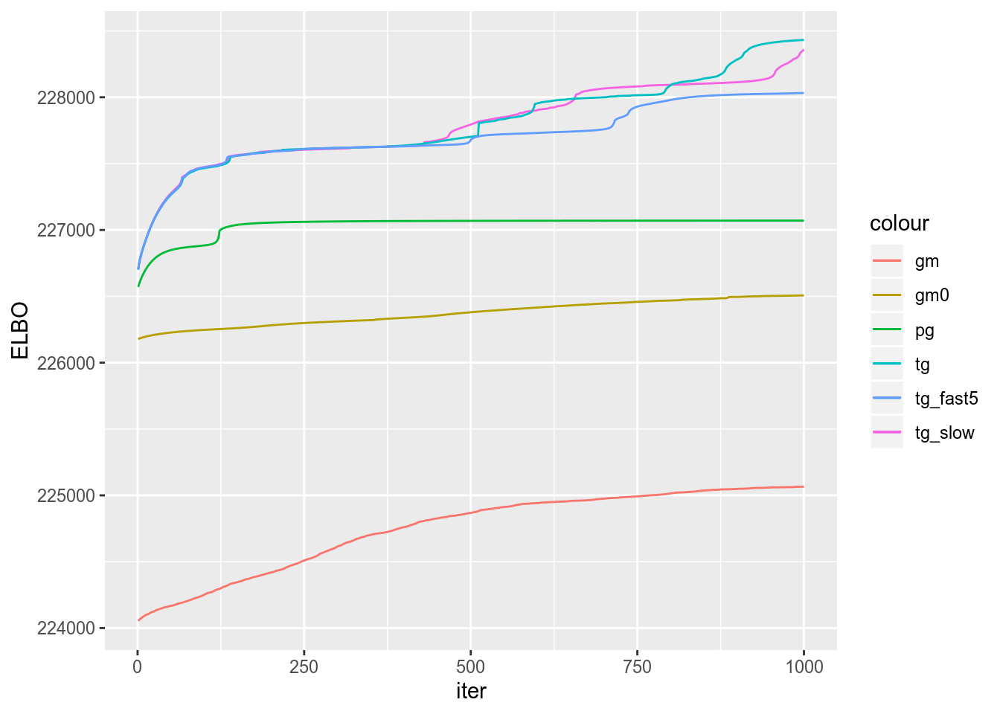
compare divergence
lam = data$L %*% t(data$F)
lam_tg_slow = fit_tg_slow$qg$qls_mean %*% t(fit_tg_slow$qg$qfs_mean)
lam_tg = fit_tg$qg$qls_mean %*% t(fit_tg$qg$qfs_mean)
lam_tg_fast = fit_tg_fast5$qg$qls_mean %*% t(fit_tg_fast5$qg$qfs_mean)
lam_pg = fit_pg$qg$qls_mean %*% t(fit_pg$qg$qfs_mean)
lam_gm = fit_gm$qg$qls_mean %*% t(fit_gm$qg$qfs_mean)
lam_gm0 = fit_gm0$qg$qls_mean %*% t(fit_gm0$qg$qfs_mean)
rmse = c(RMSE(lam, lam_tg_slow), RMSE(lam, lam_tg),
RMSE(lam, lam_tg_fast), RMSE(lam, lam_pg),
RMSE(lam, lam_gm), RMSE(lam, lam_gm0))
kl = c(KL(lam, lam_tg_slow), KL(lam, lam_tg),
KL(lam, lam_tg_fast), KL(lam, lam_pg),
KL(lam, lam_gm), KL(lam, lam_gm0))
js = c(JS(lam, lam_tg_slow), JS(lam, lam_tg),
JS(lam, lam_tg_fast), JS(lam, lam_pg),
JS(lam, lam_gm), JS(lam, lam_gm0))
maxiter = 1000
elbo = c(fit_tg_slow$ELBO[maxiter], fit_tg$ELBO[maxiter],
fit_tg_fast5$ELBO[5000], fit_pg$ELBO[maxiter],
fit_gm$ELBO[maxiter], fit_gm0$ELBO[maxiter])
runtime = c(fit_tg_slow$runtime, fit_tg$runtime[[3]],
fit_tg_fast5$runtime[[3]], fit_pg$runtime,
fit_gm$runtime[[3]], fit_gm0$runtime)
data.frame(rmse = rmse, kl = kl, js = js, elbo = elbo, runtime = runtime,
row.names = c("tg_slow", "tg", "tg_fast5", "pg", "gm", "gm0")) rmse kl js elbo runtime
tg_slow 0.4935635 554.1718 554.5210 228359.6 1821.777
tg 0.4762142 491.5743 490.0814 228432.2 812.682
tg_fast5 0.5255634 651.0243 647.9647 228052.2 1228.813
pg 0.6140282 863.3370 854.2447 227070.6 97.003
gm 0.5800835 770.8731 766.8089 225065.6 85.325
gm0 0.6058388 848.2655 843.1682 226506.9 82.313show loadings
## truth
par(mfrow = c(2,2))
for(i in 1:4){plot(data$L[,i])}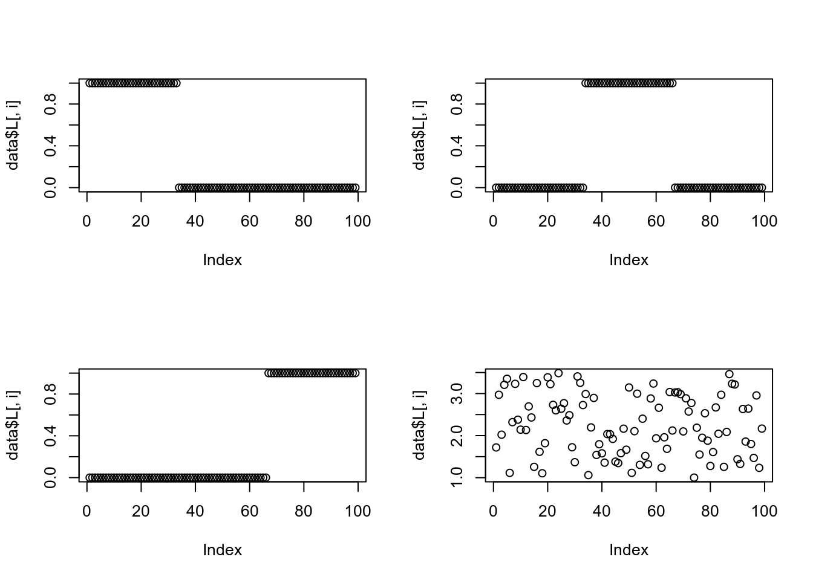
# ## initialization
# par(mfrow = c(2,2))
# for(i in 1:4){plot(data$LF0$W[,i])}
##fit_tg_slow
par(mfrow = c(2,2))
for(i in 1:4){plot(fit_tg_slow$qg$qls_mean[,i], ylab = "loading", log = "y")}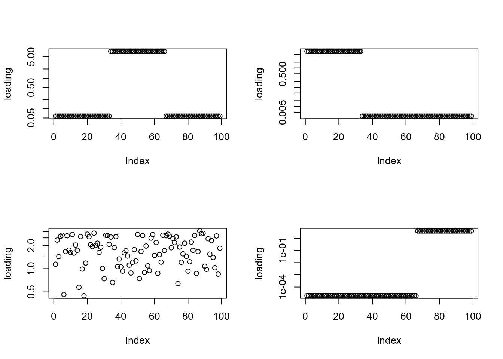
##fit_tg
par(mfrow = c(2,2))
for(i in 1:4){plot(fit_tg$qg$qls_mean[,i], ylab = "loading", log = "y")}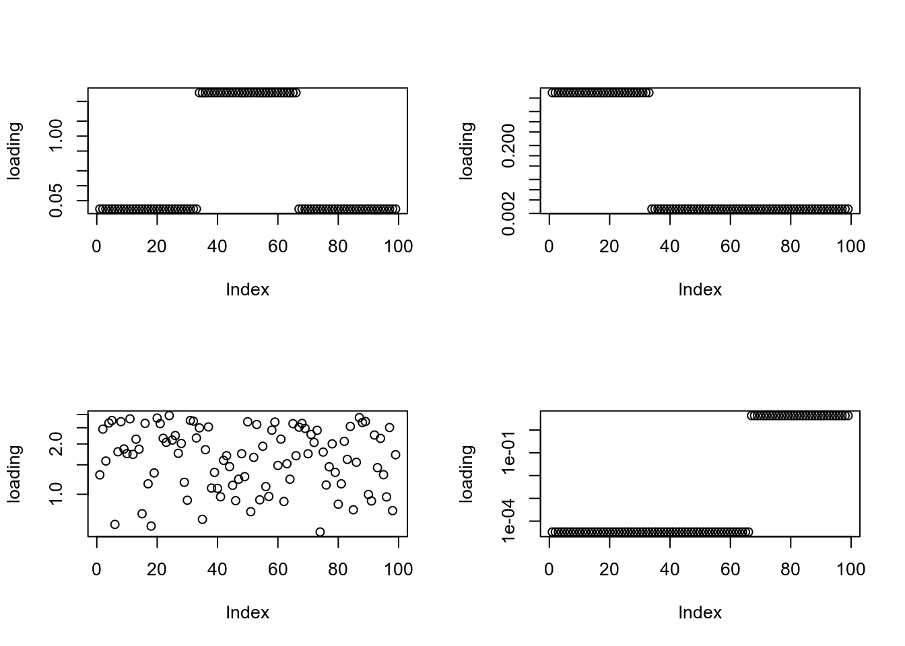
##fit_tg_fast5
par(mfrow = c(2,2))
for(i in 1:4){plot(fit_tg_fast5$qg$qls_mean[,i], ylab = "loading", log = "y")}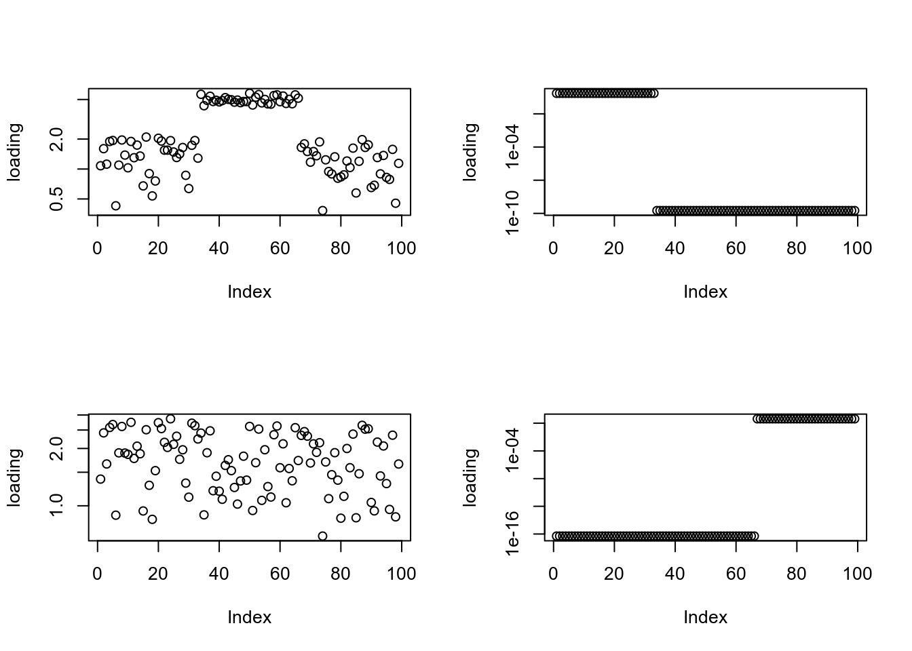
##fit_pg
par(mfrow = c(2,2))
for(i in 1:4){plot(fit_pg$qg$qls_mean[,i], ylab = "loading", log = "y")}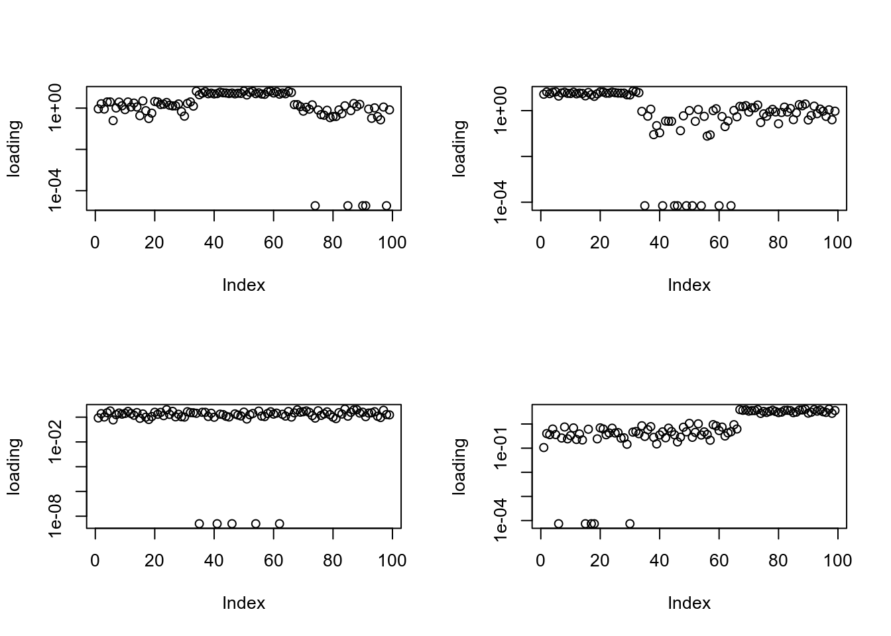
##fit_gm
par(mfrow = c(2,2))
for(i in 1:4){plot(fit_gm$qg$qls_mean[,i], ylab = "loading", log = "y")}
##fit_gm0
par(mfrow = c(2,2))
for(i in 1:4){plot(fit_gm0$qg$qls_mean[,i], ylab = "loading", log = "y")}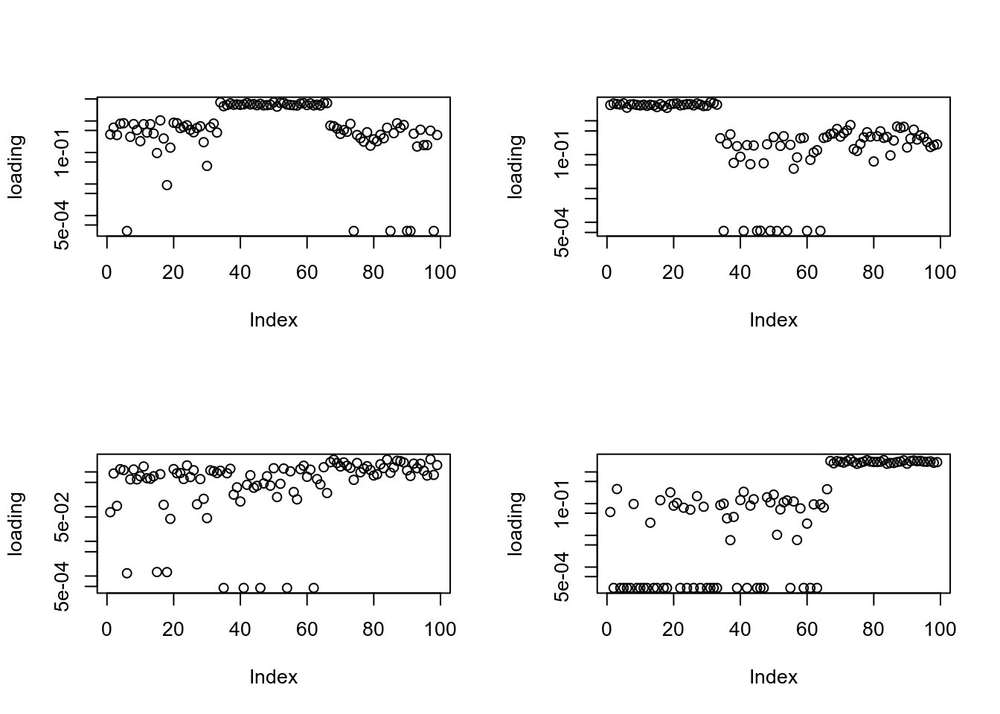
factor
## truth
par(mfrow = c(2,2))
for(i in 1:4){plot(data$F[,i])}
# ## initialization
# par(mfrow = c(2,2))
# for(i in 1:4){plot(data$LF0$H[i,])}
##fit_tg_slow
par(mfrow = c(2,2))
for(i in 1:4){plot(fit_tg_slow$qg$qfs_mean[,i], ylab = "factor", log = "y")}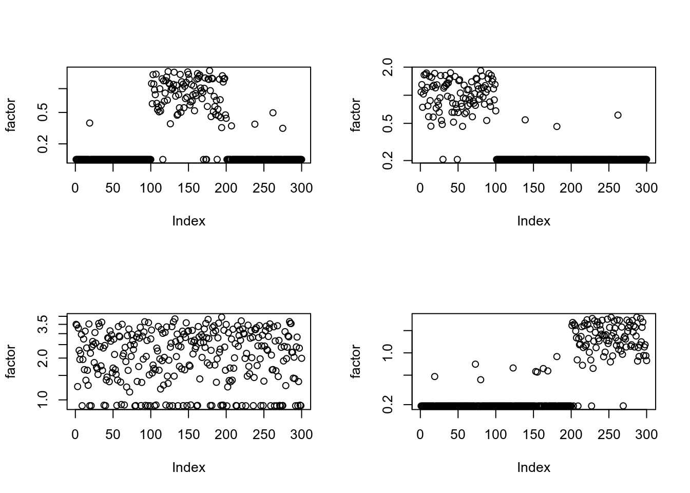
##fit_tg
par(mfrow = c(2,2))
for(i in 1:4){plot(fit_tg$qg$qfs_mean[,i], ylab = "factor", log = "y")}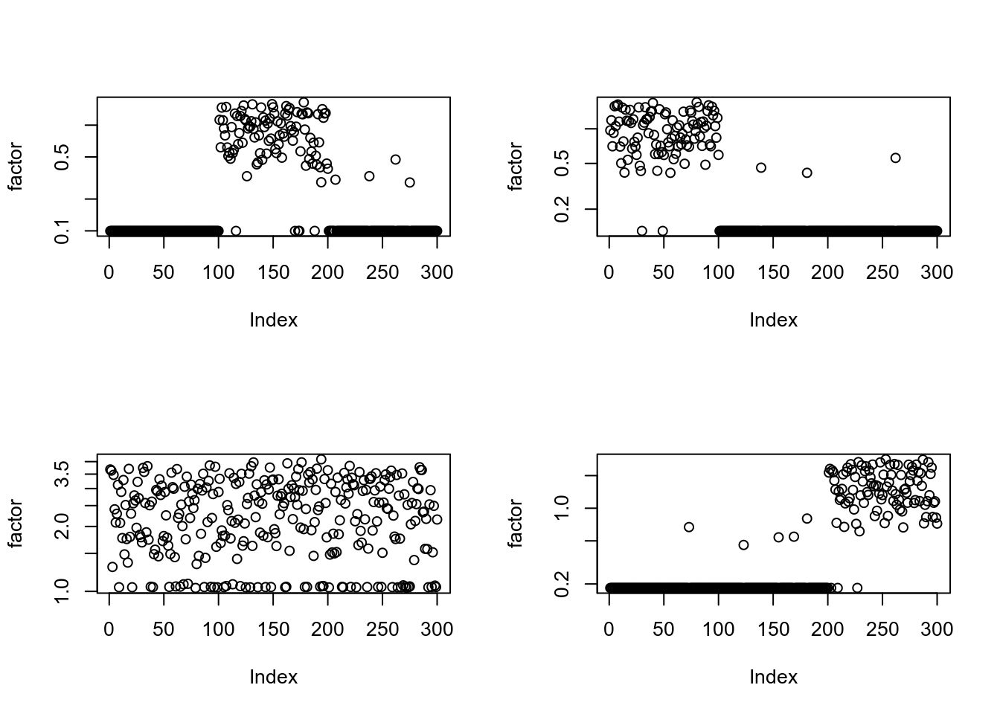
##fit_tg_fast5
par(mfrow = c(2,2))
for(i in 1:4){plot(fit_tg_fast5$qg$qfs_mean[,i], ylab = "factor", log = "y")}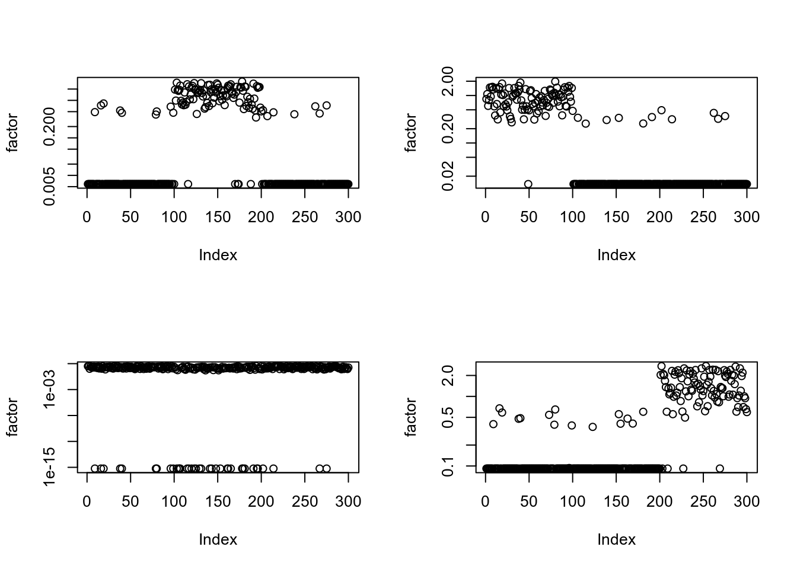
##fit_pg
par(mfrow = c(2,2))
for(i in 1:4){plot(fit_pg$qg$qfs_mean[,i], ylab = "factor", log = "y")}Warning in xy.coords(x, y, xlabel, ylabel, log): 21 y values <= 0 omitted from
logarithmic plot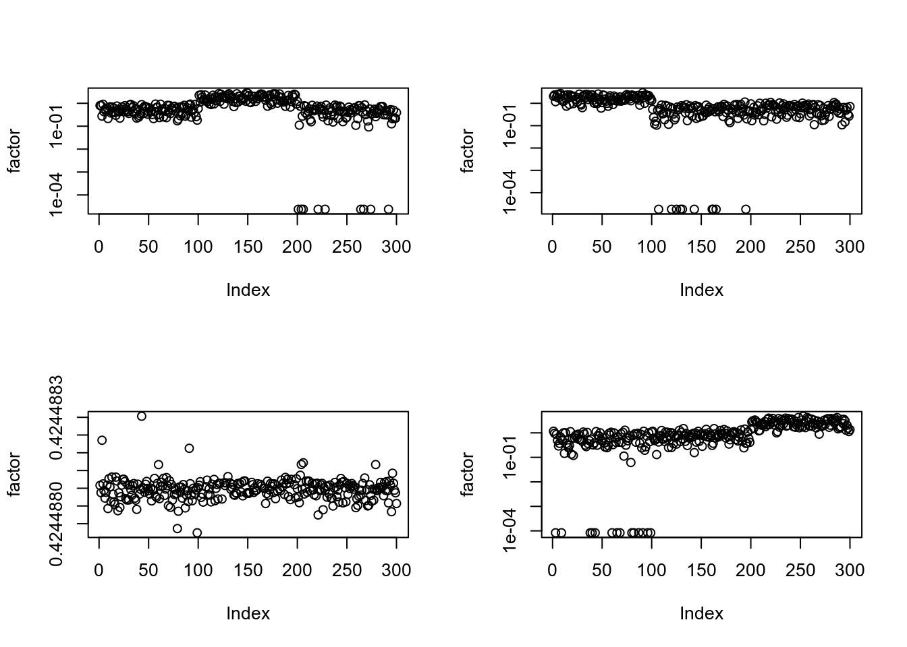
##fit_gm
par(mfrow = c(2,2))
for(i in 1:4){plot(fit_gm$qg$qfs_mean[,i], ylab = "factor", log = "y")}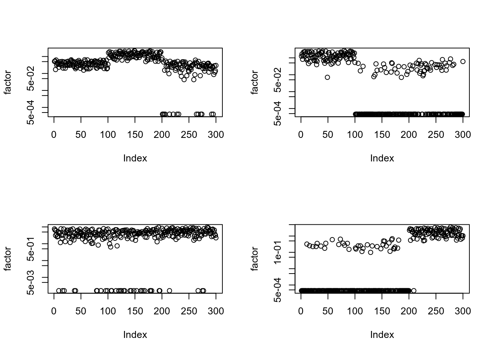
##fit_gm0
par(mfrow = c(2,2))
for(i in 1:4){plot(fit_gm0$qg$qfs_mean[,i], ylab = "factor", log = "y")}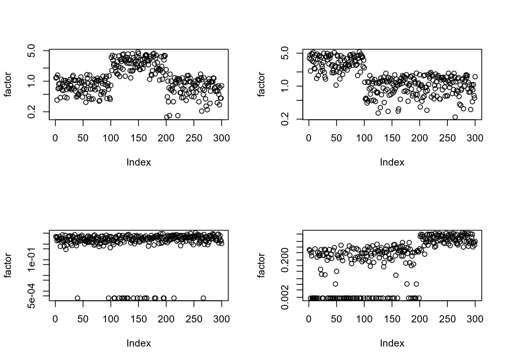
sessionInfo()R version 3.6.2 (2019-12-12)
Platform: x86_64-pc-linux-gnu (64-bit)
Running under: Ubuntu 18.04.1 LTS
Matrix products: default
BLAS: /usr/lib/x86_64-linux-gnu/blas/libblas.so.3.7.1
LAPACK: /usr/lib/x86_64-linux-gnu/lapack/liblapack.so.3.7.1
locale:
[1] LC_CTYPE=en_US.UTF-8 LC_NUMERIC=C
[3] LC_TIME=en_US.UTF-8 LC_COLLATE=en_US.UTF-8
[5] LC_MONETARY=en_US.UTF-8 LC_MESSAGES=en_US.UTF-8
[7] LC_PAPER=en_US.UTF-8 LC_NAME=C
[9] LC_ADDRESS=C LC_TELEPHONE=C
[11] LC_MEASUREMENT=en_US.UTF-8 LC_IDENTIFICATION=C
attached base packages:
[1] stats graphics grDevices utils datasets methods base
other attached packages:
[1] ggplot2_3.2.1 workflowr_1.6.0
loaded via a namespace (and not attached):
[1] Rcpp_1.0.3 compiler_3.6.2 pillar_1.4.3 later_1.0.0
[5] git2r_0.26.1 tools_3.6.2 digest_0.6.23 evaluate_0.14
[9] lifecycle_0.1.0 tibble_2.1.3 gtable_0.3.0 pkgconfig_2.0.3
[13] rlang_0.4.4 yaml_2.2.1 xfun_0.12 withr_2.1.2
[17] stringr_1.4.0 dplyr_0.8.4 knitr_1.28 fs_1.3.1
[21] rprojroot_1.3-2 grid_3.6.2 tidyselect_1.0.0 glue_1.3.1
[25] R6_2.4.1 rmarkdown_2.1 farver_2.0.3 purrr_0.3.3
[29] magrittr_1.5 whisker_0.4 backports_1.1.5 scales_1.1.0
[33] promises_1.1.0 htmltools_0.4.0 assertthat_0.2.1 colorspace_1.4-1
[37] httpuv_1.5.2 labeling_0.3 stringi_1.4.5 lazyeval_0.2.2
[41] munsell_0.5.0 crayon_1.3.4